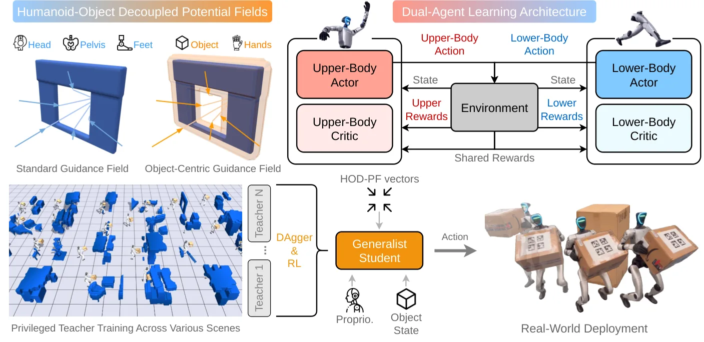
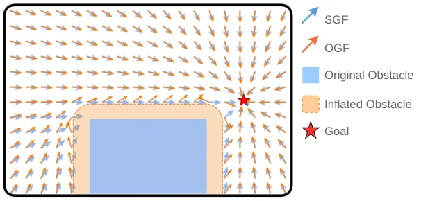
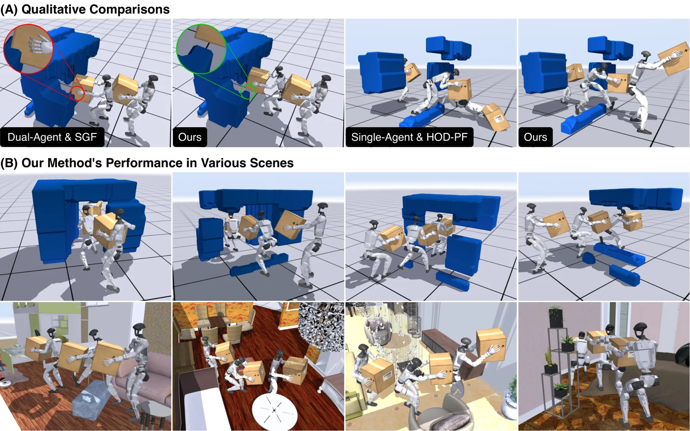
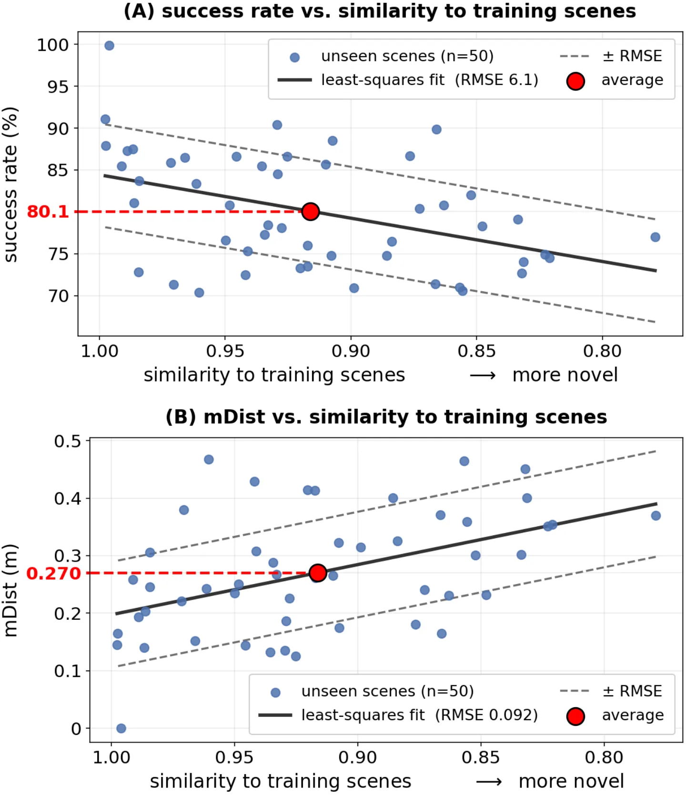
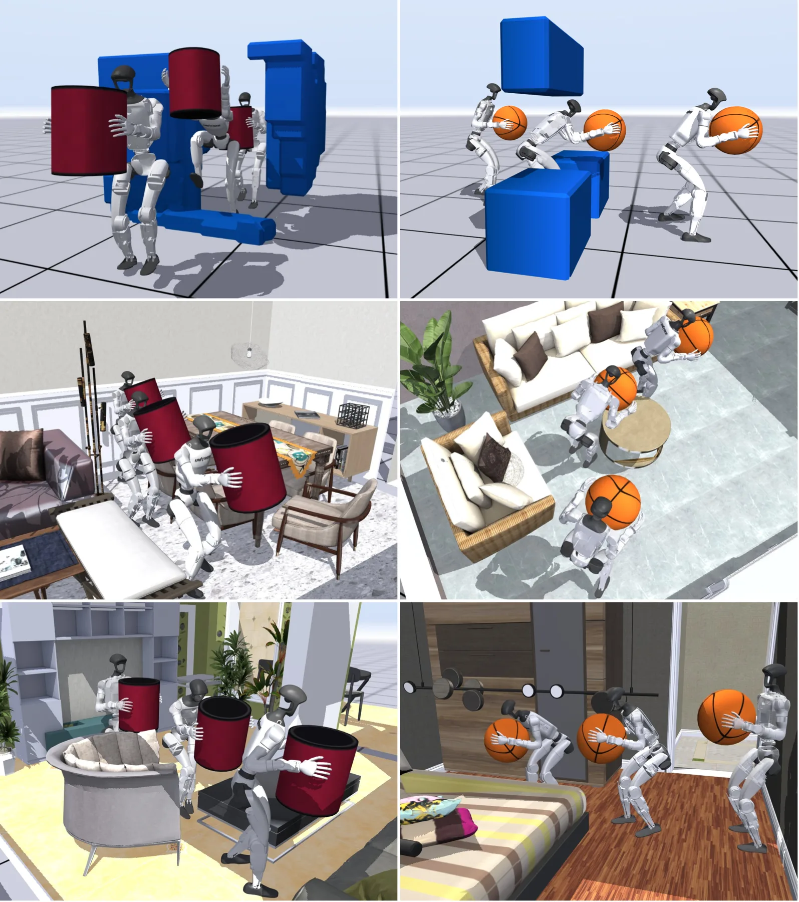
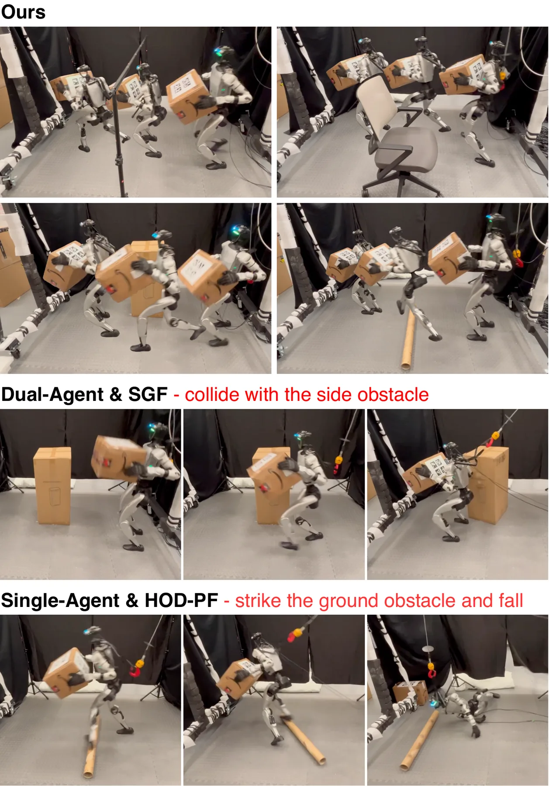

HOTICE：杂乱环境中的全身人形机器人物体搬运
HOTICE: Whole-Body Humanoid Object Transportation in Cluttered Environments
把障碍几何写成两组可查询势场并同时用作策略输入与奖励，再用双智能体拆分全身动作空间，使搬运中的避障引导与平衡控制不再在同一优势估计里竞争。
simulation success rate
unseen-scene SR
作者、单位与技术谱系 · Research context
作者与单位
研究脉络
- HumanoidPF（文献 [21]）方法基座关系：本文 SGF 的直接来源与其局限所在[arXiv 官方 HTML v1]
- TANGO（文献 [22]）上游同期工作关系：同类杂乱场景下的长程具身任务[arXiv 官方 HTML v1]
- 3D-FRONT 与程序化场景生成上游数据与工具关系：真实感室内场景与程序化杂乱场景的来源[arXiv 官方 HTML v1]
- HOTICE（本文）本篇推进关系：把势场从单机器人扩展到人-物解耦，并加入双智能体与专家蒸馏[arXiv 官方 HTML v1]
合作网络
- 论文作者与展示站点USC 作者团队 → hotice2027.github.io关系：论文声明的展示地址[arXiv 官方 HTML v1]
- HOTICE 与 HumanoidPFHOTICE 的引导场模块 → HumanoidPF 势场与场景流水线关系：明确技术依赖并显式扩展[arXiv 官方 HTML v1]
- 真机部署链路Unitree G1 与 AprilTags → 搬运策略的输入估计关系：硬件与感知依赖[arXiv 官方 HTML v1]
- 仿真训练环境MuJoCo Playground 与 SAPIEN 类工具链无关 → HOTICE 策略训练关系：明确的仿真依赖[arXiv 官方 HTML v1]
作者与单位信息来自论文作者块（USC，含同等贡献与同等指导标注）；技术接续来自正文对 HumanoidPF、TANGO、3D-FRONT、MuJoCo Playground 的引用。除署名与公开依赖外，未发现公开证据支持的师生或机构关系，相关推断不作补写。
方法本质拆解 · What actually changed
是不是微调？
从头训练强化学习策略（MuJoCo Playground）：每个场景一个 teacher 训练 400M 步，再用 DAgger 蒸馏成单一 student 并继续做 PPO 精调；student 训练时注入传感器噪声与控制延迟以缩小 sim2real 差距；未使用预训练大模型或视觉骨干，策略是状态式 MLP，因此车身关键点数量增加也不显著增加时延。
有没有额外约束？
输入侧注入两组势场引导向量（头/肩/躯干/骨盆/膝/脚，加双手与物体 8 个关键点），并把“沿引导方向运动”写成余弦相似奖励；OGF 相对膨胀 8 cm 的障碍计算以换取提前避障；奖励被拆成下半身、上半身与共享三组，共享项同时进入两个智能体的优势估计。
推理/后端到底做了什么？
推理是 50 Hz 的状态式策略前向加 PD 控制，不做在线优化或轨迹规划；引导场由实时定位、关节角与 AprilTags 盒位姿现场计算；场景几何来自事先 SLAM 重建的静态地图而不是在线重建。
方法本质是什么？
把障碍几何编码成两个可查询向量场并同时用作输入与奖励，再把 20 维全身动作拆成上下半身两个智能体、用共享奖励保持耦合，使避障引导与平衡控制不再在同一个优势估计里互相竞争；代价是遇到新场景族需要重训 teacher 并重新蒸馏。
输入=实时状态加两组势场引导向量；改变的位置=策略输入与奖励结构（不是规划器）；动作=双智能体 PPO 加 DAgger 蒸馏、障碍膨胀 8 cm；效果=仿真成功率 88.5%、未见场景平均 80.1%，真机 50 Hz 完成侧面/头顶/地面障碍搬运。

桥接价值Bridge
桥接价值
具身决策端少见地把“障碍几何”显式写进策略输入与奖励：HOD-PF 把机器人自身与所搬物体拆成两组势场，物体一侧用膨胀 8 cm 的障碍计算，换来更提前、更保守的避障行为。它同时回答了两个我们关心的问题——几何量（SDF 与测地距离）如何进入学习策略而不需要场景特定调参，以及高维动作空间如何分工（上半身 8 维 / 下半身 12 维、共享奖励保持耦合）。真机 50 Hz、只依赖实时定位与 AprilTags，是可部署性的直接证据。
方法与模块Method
方法摘要
① HOD-PF：标准引导场 SGF 的吸引项用测地距离、斥力项用 SDF（d0=0.2 m、η=0.6、ξ=1e-3），查询头/肩/躯干/骨盆/膝/脚；物体中心引导场 OGF 把障碍膨胀 8 cm 后计算，查询物体 8 个关键点与双手，奖励项是速度与引导向量的余弦相似并减去整体导航命令以只保留残差贡献。② 双智能体 PPO：上半身 8 维、下半身 12 维各有 actor 与特权 critic，奖励拆成下半身（运动/平衡）、上半身（够取/持握）与共享组（举升与势场奖励），两个 PPO 目标相加，共享项保证两端共同承担搬运。③ 专家到通才：并行训练场景特定 teacher（每个 400M 步、特权无噪状态），DAgger 蒸馏为单一 student 并用 PPO 精调，student 训练注入传感器噪声与控制延迟。
可迁移模块
① 把 SDF 与测地距离场作为策略输入与奖励的接口，可直接用于任何带几何约束的在线决策（导航、巡检、门洞穿越）；② 对不可直接驱动的对象（被搬物体、拖挂、工具末端）用“膨胀边界 + 残差奖励”的做法，是处理刚体耦合的通用技巧；③ 双智能体奖励拆分加共享项，可复制到全身协调类任务的分工学习；④ 用引导场与训练场景的余弦相似度度量场景新颖度、再画成功率退化曲线，是评估泛化边界的轻量方法。

证据Evidence
关键证据与数字
Table I（20 场景 ×1,000 rollouts，共 20,000 次）：HOTICE 成功率 88.5%、平均到目标距离 0.130 m，对照 Single-Agent & SGF 58.7%/0.296 m、Single-Agent & HOD-PF 65.7%/0.267 m、Dual-Agent & SGF 77.1%/0.195 m。泛化：75 个 teacher 蒸馏的 student 在 50 个未见场景上平均成功率 80.1%（作者描述下界约 70%）、平均距离 0.27 m。形状泛化（Table II）：长方体 88.5%/0.130 m、圆柱 86.7%/0.127 m、球 87.2%/0.131 m。真机（Table III，每种障碍 6 次）：HOTICE 侧面 6/6、头顶 5/6、地面 5/6；Dual-Agent & SGF 为 4/6、4/6、4/6。搬运对象上限 3.5 kg 与 40×40×40 cm³，策略与拾取策略均以 50 Hz 运行。
边界与下一步Limits & Next Step
边界与风险
① 不建模碰撞后场景：若扰动超过恢复能力，机器人直接跌倒；② 不处理动态障碍，也暂不支持扛肩、贴髋等更复杂搬运姿态；③ 真机每种障碍仅 6 次试验，统计功效有限；④ 真机场景几何来自事先用机器人走行 SLAM 重建的静态地图，作者说明 G1 的单车载 LiDAR 视野被所搬箱子遮挡，因此在线 LiDAR 重建在硬件上受限；⑤ 训练规模不小（每 teacher 400M 步、75 个 teacher 用于泛化实验），复现成本需要先评估。
下一步实验
① 把 HOD-PF 式势场输入接到我们的导航或巡检策略上，做“有无几何引导场”的最小对照；② 针对其碰撞后恢复缺口，评估用恢复奖励或安全过滤（CBF 类）补足的收益；③ 在含移动行人/动态障碍的场景下评测，这是室内外巡检的必需条件；④ 复现“场景相似度 vs 成功率”的分析方法，用于量化策略在域外工况下的退化。
{kind=link}

{kind=link}

{kind=link}

{kind=link}
